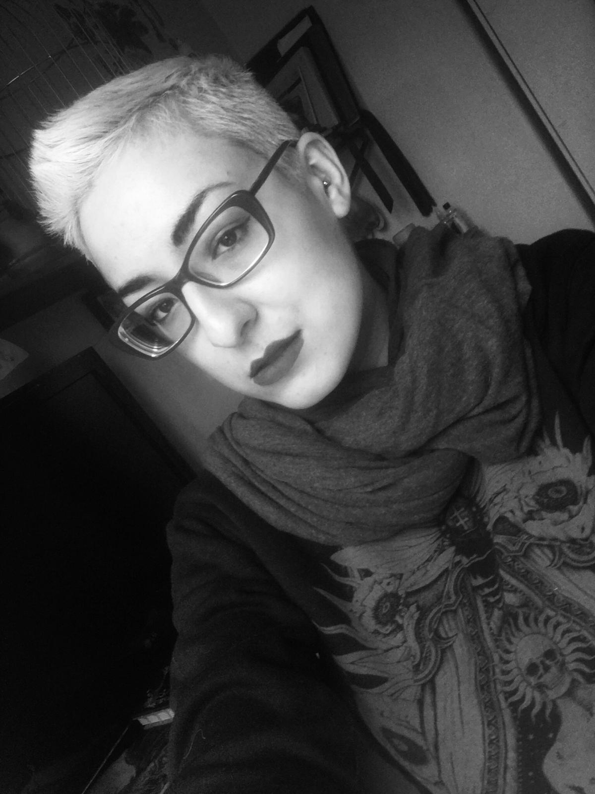
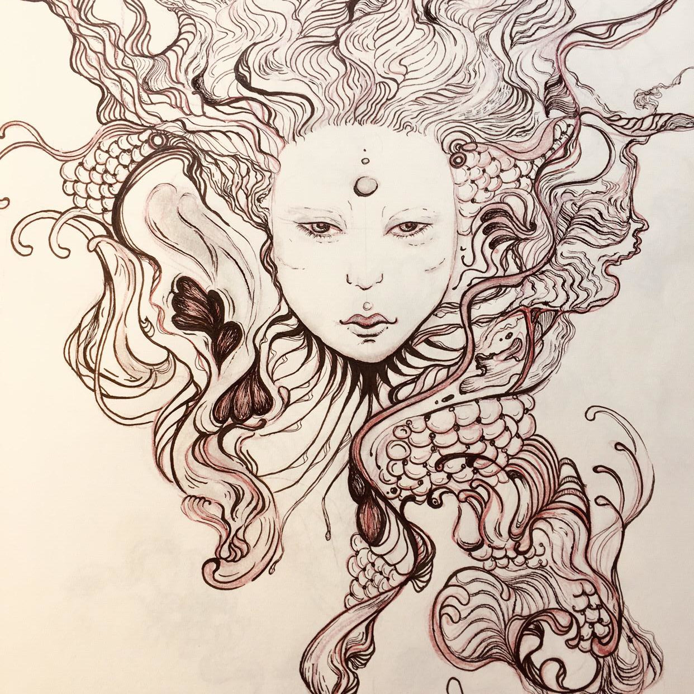
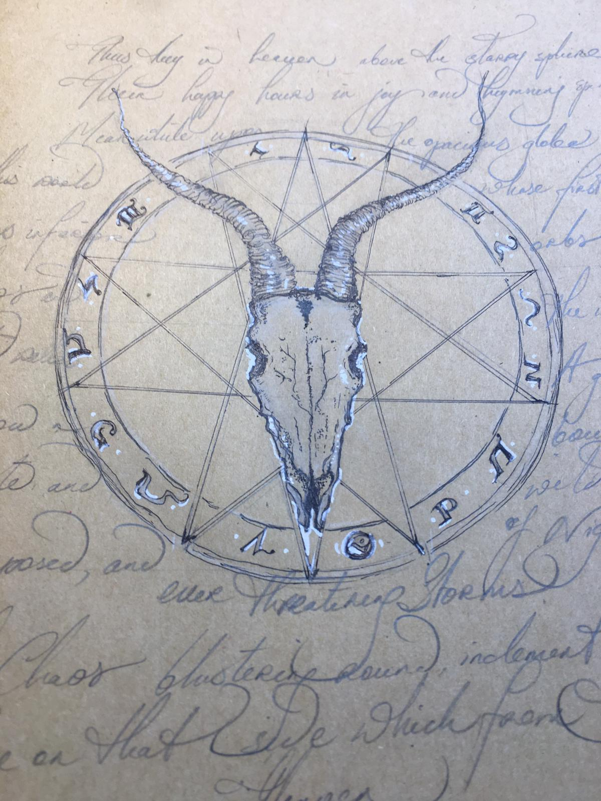
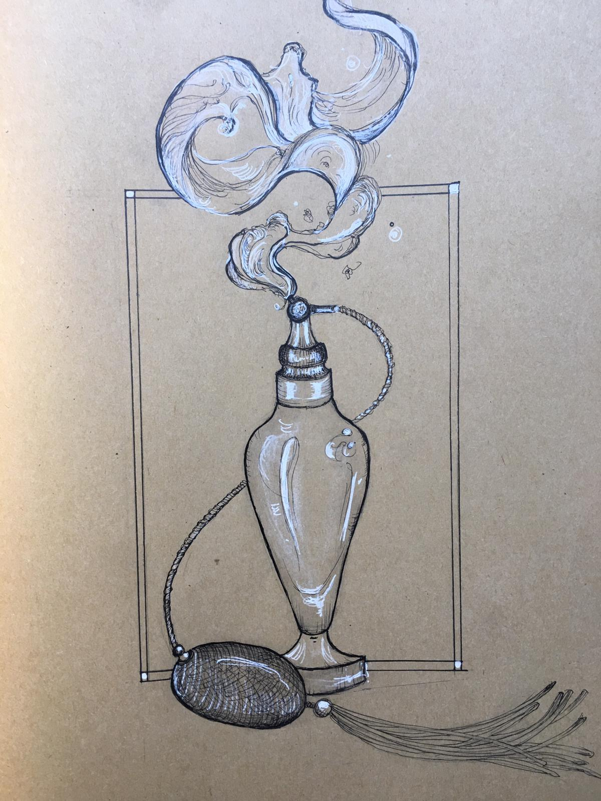
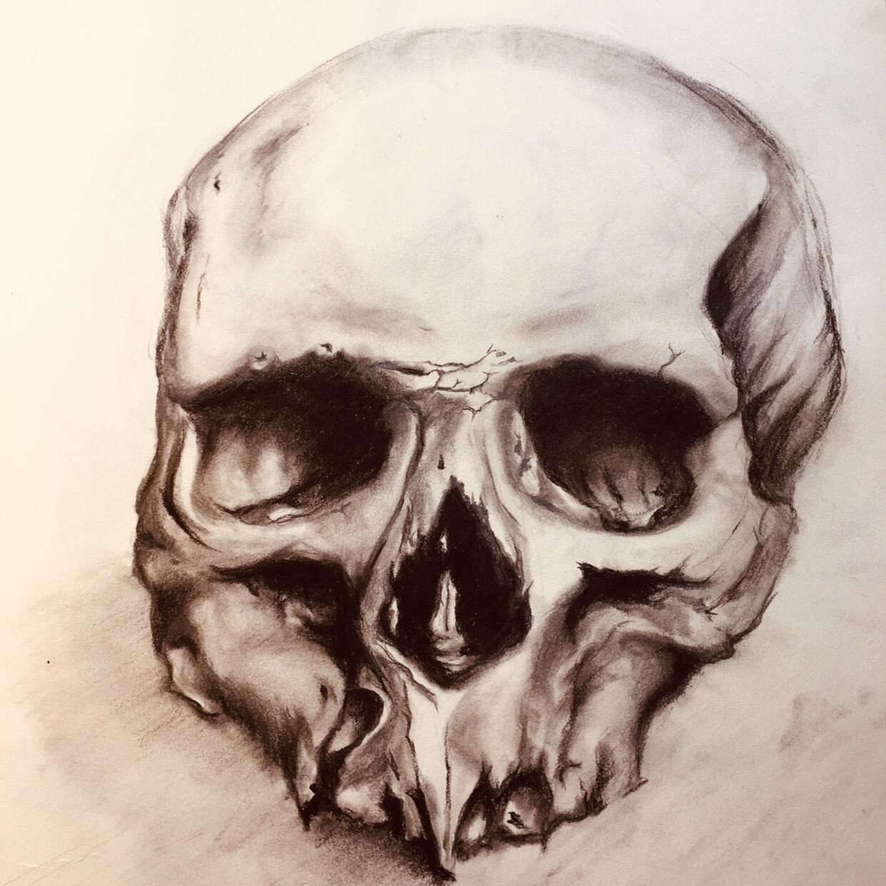
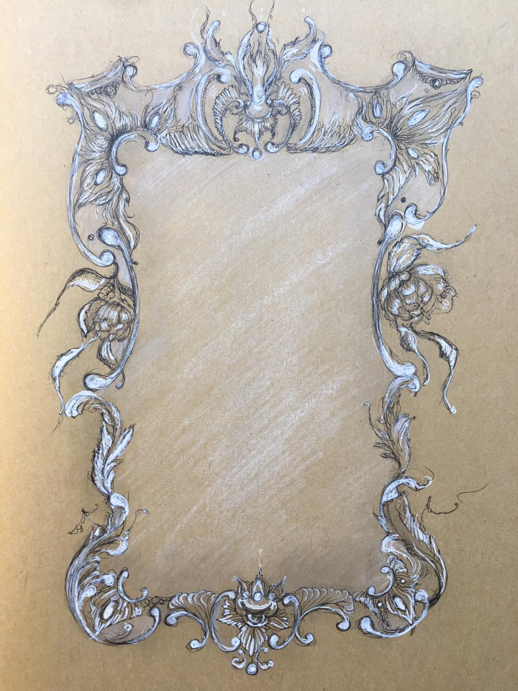

Lana is an experienced hand poke tattoo artist based in south London whose practice is focused on custom work which teeters between the balance and order of geometric shapes and the organic vitality and harmony of botanicals.
Lana's first love is paper illustrations. Working with ink, fine-liners and pencil, she is influenced by vintage illustrator Mucha and more contemporary artists such as Zouravliov and Yamamoto. Lana's passion for fine art becomes evident when the canvas transforms into flesh. Lana's detailed approach evokes organic curvature and intricate patterns, a style which has become characteristic of her work.




Lana views the body as a palette of self-expression and laboriously and painstakingly plans and places pieces in harmony with her client.
Lana was recently placed third in an Irish Body Painting Competition. This exciting and eclectic medium displays Lana's passion for design and colour work and is artistic foreplay for her tattoos.
Lana is an artist, multilingual psychology graduate and a teacher who can be found [ ] and poking people to feed her coffee habit.
